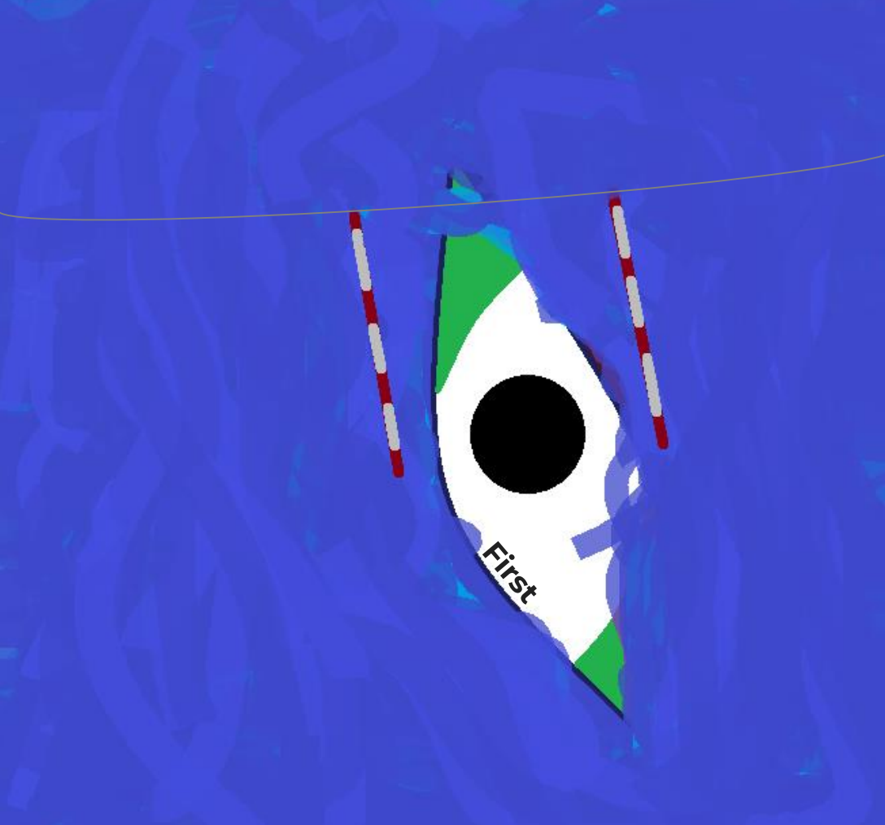

First
VitaKayaks First — це каяк, створений для початківців, що відзначається стабільністю та легкістю у використанні, що особливо важливо для новачків. Завдяки широкому та стійкому корпусу, цей каяк надає відчуття впевненості на воді, що дозволяє комфортно освоювати навички балансування та веслування. Дизайн корпусу розроблений для покращеної стабільності, забезпечуючи впевненість навіть у дещо неспокійних водах. Крім того, VitaKayaks пропонує модель First у різних розмірах, що дозволяє підібрати підходящий варіант для різних типів статури. Цей каяк також відомий своєю довговічністю, адже виготовлений із матеріалів, стійких до зношування, що робить його чудовим вибором для рекреаційного веслування на озерах або спокійних річках.
